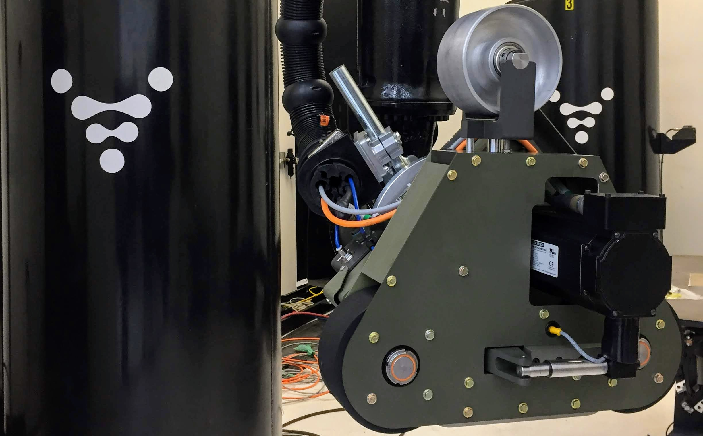

My Summer at Relativity Space
About Relativity
Relativity Space is a startup in Los Angeles with the goal of rethinking space travel. Their vision is to produce a rocket that is fully 3D printed, from engines to fuel tanks and everything in between. Not only would this drastically decrease the complexity, but the lead time and cost for a rocket would also be dramatically cut. Since being founded just a few years ago, they have developed their own 3D printer, Stargate, and have had over 100 test fires from their engine.
During the summer of 2018, I was able to be a mechanical engineering intern at Relativity Space with a specific focus on assisting the hardware integration that would be occuring on their Stargate printer during my internship.
FacePlates
Relativity was in the process of getting new positioners for Stargate and any future cells that they were planning. These new positioners had much larger weight capacity compared to the current ones, and so I was tasked with creating new faceplates for those new positioners. I would create two versions: one which was large enough to have hole patterns that allowed for a 7ft diameter prints and one that was designed for smaller ones.
The quality and repeatability of the print we could produce relied heavily on the precision in the positioner and therefore the plates that interfaced between the prints and the positioner. This project therefore required me to become much more comfortable with GD&T as the positioners had very specific posioning features that we had to interface with in order to maintain that precision.
Triangular Belt Sander
 The major piece of equipment which was being delivered during my time was
a triangular belt sander combined with a force compliant unit. I was therefore
tasked with creating a mounting bracket that would interface between the end of the
robot and the back of the force compliant unit.
The major piece of equipment which was being delivered during my time was
a triangular belt sander combined with a force compliant unit. I was therefore
tasked with creating a mounting bracket that would interface between the end of the
robot and the back of the force compliant unit.
This bracket had a few major design constraints that I had to work around:
- The bracket had to interface with the positioning features located on the robot. These included a positioning pin as well as a indented circular feature centered along the axis of rotation of the end of the robot.
- The bracket had to be wide enough to allow for cable management and protection hardware.
- The bracket needs to be strong enough to withstand the dynamic loads given by both the robot as well as the force compliant unit.
Because of these constraints, the original mounting plate that was provided for the force compliant unit would not work, as it did not fit within the first two constraints. The final bracket that I designed worked extreemly well due to the simplicity of its design. By removing the back plate from the force compliant unit and intefacing with the positioning features used in the original plate, I was able to create a bracket that was sturdy, repeatable, and limited the moment on the end of the robot.
With the belt sander mounting complete, I was also tasked with recommitioning the robot for the new hardware. This meant pulling off all the previous electrical and pneumatic systems that were no longer necessary and then wiring all the belt sander cables through the cable management system and through the robot. I also worked with another engineer to build a controller box for all the electronics required for the belt sander.
I was fortunate to be able to see all my hard work come together at the end of my internship with the new positioner, faceplate, and belt sander working together as one.